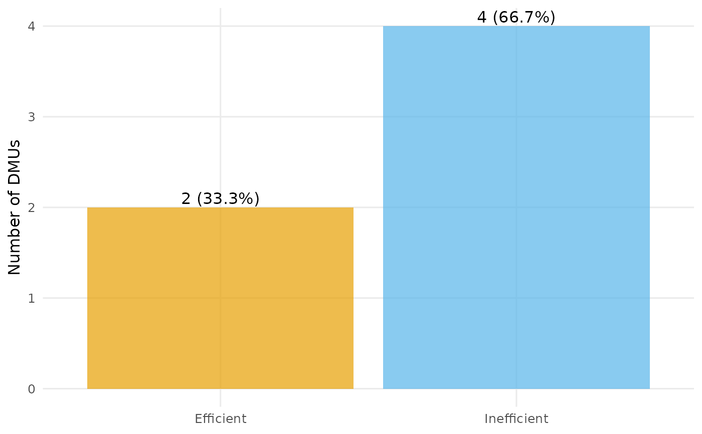

Classifies the DMUs as efficient or inefficient (efficiency score equal to 1 within a tolerance) and draws a bar chart of the counts, annotated with the percentage of DMUs in each group.
Usage
plot_io_efficients(
x,
rts = c("crs", "vrs", "drs", "irs", "fdh", "add"),
orientation = "in",
tol = 1e-06,
labels = TRUE,
transparency = 0.7,
subtitle = NULL,
title = NULL,
interactive = FALSE,
...
)Arguments
- x
A
dea_dataobject, or a data frame coerced byas_dea_data.- rts
Returns to scale passed to
compute_efficiency.- orientation
Measurement orientation passed to
compute_efficiency.- tol
Tolerance for treating a score as efficient (default
1e-6).- labels
Logical; if
TRUE(default) the count and percentage are printed on each bar.- transparency
Opacity of the markers/areas, a single number in
[0, 1](default0.7).- subtitle
Optional subtitle shown beneath the title.
- title
Optional plot title.
- interactive
Logical; static ggplot2 (default) or interactive plotly.
- ...
Additional arguments passed to
geom_col.
Examples
df <- data.frame(
dmu = paste0("D", 1:6),
i_x1 = c(4, 7, 8, 4, 2, 5),
i_x2 = c(3, 3, 1, 2, 4, 2),
o_y = c(5, 8, 6, 7, 3, 9)
)
plot_io_efficients(df, rts = "crs")
